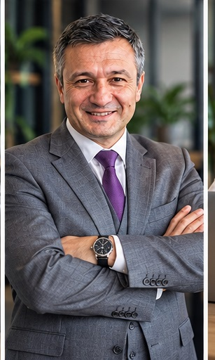

Я — Николаич. Ломаю шаблоны, выстраиваю эффективные системы и возвращаю «человечность» в бизнес-процессы.
Начать трансформацию
Опыт
Реальные кейсы
В мире победивших алгоритмов и бездушных автоворонок побеждает тот, кто не боится быть настоящим. Мой подход — это латеральное мышление.
Мы не просто настраиваем рекламу или пишем регламенты. Мы ищем нестандартные связки, смотрим на бизнес под углом, недоступным конкурентам, и выстраиваем архитектуру роста, где каждый винтик работает на общий результат.
Креатив спасает там, где бюджеты бессильны.
4 столпа уверенного масштабирования
Настраиваю высококонверсионные воронки продаж в интернете. Реализую нестандартное, латеральное продвижение, которое бьет точно в цель и экономит бюджет.
Веду бизнесы в геосервисах (Яндекс Карты, 2ГИС, Google Maps).
Выжимаем максимум из вашей локации, делая вас выбором #1 на районе.
Консультирую по сложным вопросам управления. Разрабатываем и внедряем кадровую и общеуправленческую документацию, чтобы бизнес работал как часы.
Разрабатываем комплексные стратегии предприятия. Анализируем рынок, создаем и внедряем совершенно новые продукты и услуги, обходя конкурентов.
От первого контакта до масштабирования системы.
Погружаюсь в процессы. Ищем "узкие горлышки", утечки бюджета и неиспользованный потенциал вашей базы и продукта.
Никаких шаблонов. Разрабатываем уникальный путь развития, будь то новая воронка, корректировка HR-политики или выход в геосервисы.
Берем разработанный план и превращаем его в реальные цифры прибыли. Сопровождаю бизнес на этапе интеграции новых инструментов.